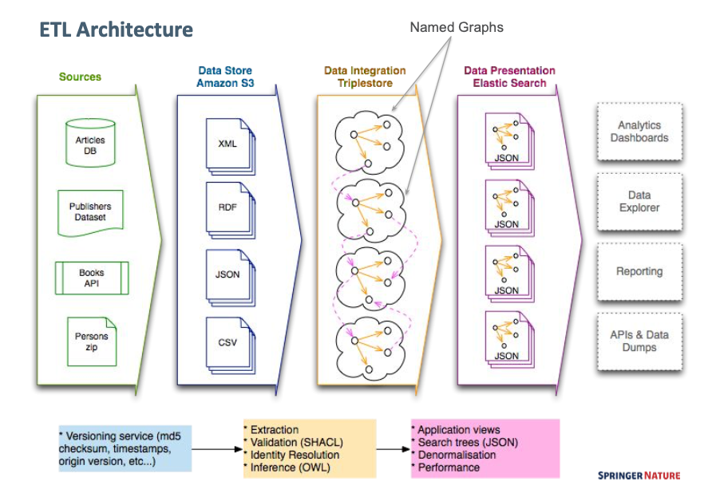
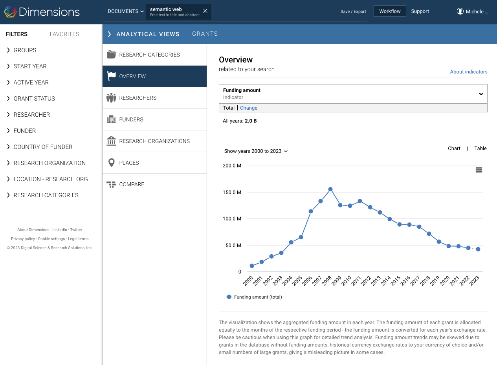

SciGraph 2017-2023
Springer Nature retired SciGraph earlier this month. I have been the data architect and then technical lead for this project, so this is post is just a reminder of the great things we did in it. Also, a little rant about the things that weren't that great...
Open Linked Data for the Scholarly domain
SciGraph has been running for almost 8 years. I've been involved with the project since its early days in 2016, together with lots of enthusiastic people at Springer Nature.
It started out as an attempt to break data silos about scientific publications. We chose Linked Data as its core technology for multiple reasons: its open standards and vibrant community, the expressive knowledge modeling languages, and last but not least the intent to support an increasing number of researchers/data-scientists who could independently take advantage of these datasets in order to build innovative applications.
Quickly it became evident that a centralised repository of well-structured interlinked metadata could be used for business intelligence applications too.
Monitoring journals; tracking hot research topics; understanding reading and writing habits of scientists. Just to mention a few examples of what it's nowadays called research analytics.
We weren't the only ones dealing with such issues, for sure. But in the scholarly context, outside the academic research world of conference prototypes and half baked ideas, SciGraph felt like a pretty significant attempt to marry cutting edge technologies within a real-world setting of an established enteprise in the scientific pubishing sector.
See also: sn-hack-day
The data grows
In 2017 we released around 1Billion triples including abstracts for the entire Springer Nature catalogue, under a liberal CC-BY license. The data could be downloaded in bulk as well as explored visually online. .
That was quite something.
Of course, for us, the tech folks, open science data was a no-brainer. Data had to be free. But that's not what an average company director would think. Creating an open data repository took a lot of convincing and it'd never had happened if it wasn't for several product managers who shared that vision with us.
The social engineering challenge was equally important as the technical one.
More or less at the same time, we started building research analytics dashboards for our journal editors and other publishing departments. It started out as a little prototype, but quickly the demand for analytics exceeded what we, a single team largely focused on data engineering, could do.
Our triplestore couldn't handle real time SPARQL analytics on top of such a large graph. Text search was severely limited. So we started denormalising data into JSON and storing it into a document database optimised for search.

The solution worked well. But soon it kind of felt that the triplestore was becoming some kind of ballast. It took a week or more for all data to enter the triplestore via our ETL; but as soon as that happened, we couldn't wait to pull it out again so that it could be used more effectively.
A graph without a graph
From a knowledge modelling perspective, the RDF family of languages is really flexible and expressive and it feels natural to use. Coupled with SPARQL, it allows to build elegant 'data webs' that make it much easier to handle complex models and runtime integrated queries across multiple data sources.
But the performance, i.e. building web applications on top of it, was a nightmare. Expressivity has a cost and to this day, I can't recall of any real-world application that can be sitting on top of a triplestore only. But I'm pretty sure you can build something on top of SQLlite.
Meaning: more complex architectures. Caching, denormalised layers, fast access APIs etc.. Which is all fine, if you have the time and people to do it.
Eventually we found it more economical to give up the RDF triplestore layer. We kept using RDF simply for modeling purposes: data was encoded natively in JSON-LD and stored directly in a documents database. Let the query language do the rest.
What happened to the graph? It started feeling more like a methodology than a piece of the architecture.
An alternative web of data?
During the last few years we joined forces with Dimensions and we've been generating SciGraph RDF pretty much from a bunch of BigQuery SQL scripts and some Python to create valid JSON-LD using schema.org RDF.
I've been working a lot with BigQuery lately, actually. Each time I write a couple lines of SQL, I still feel some kind of resistance in my head. So unnatural, thinking in terms or tables in a world that is made of relationships. I still think of data as a collection of nodes and edges.
But the simple fact I can query petabyte of data with sub-second response times, across datasets that I do not own nor maintain, makes me wonder.
Is this what the real web of data looks like?
Surely it's a web of data that works.
It's not the perfect world of subject-predicate-object simplicity, but applications and businesses can rely on it. There's a lesson to be learned there...
The Semantic Web?
The so-called Semantic Web was a massive business operation. Obviously a lot of good ideas and people came out of that, but I am not sure that's worth the hundreds of millions of research funding that seem to have gone into it in the last 20 years.

(Source: Dimensions search)
Invisible users
During the last couple of years, we made some important releases (e.g. data for Patents and Clinical Trials and various navigation improvements). Overal, the Linked Open Data side of SciGraph managed to rack up a pretty large amount of traffic. Around 20-30 millions hits a month.
Those numbers are not insignificant. Nonetheless, we ran into a problem raised a while ago by a British National Library team: who is using our linked data?
A website that is modeled around an open API makes it pretty much impossible to track usage. All of that traffic can't be easily turned into an impact statement. At least, not one that would justify paying the infrastructure costs.
Is that another fundamental flaw of the open linked data idea? I guess so. A simple standard authentication mechanism could have gone a long way in terms of measuring who and how much is using this data. REST APIs have won this battle hands down...
SciGraph's legacy
SciGraph latest release will remain available indefinitely thanks to our friends at FigShare.
Other resources are available on this site and elsewhere e.g. this post on modeling publications in SciGraph and this paper about how we used SHACL to create many thematic 'graphs'. The SN SciGraph Github repository also contains relevant RDF sources files that could inform future work.
For that regards the dashboarding and research analytics work: that has grown immensely in the last few years, and there's a lot more we're doing on that front with my colleagues at Digital Science. So I can't be happier about that.
It all rotates primarily around BigQuery and related technologies. So not quite the data modeling fun you can have with graph technologies.. but couldn't we have a more powerful graph oriented database layer on top of massively scalable cloud technologies?
If you know about that, let me know.